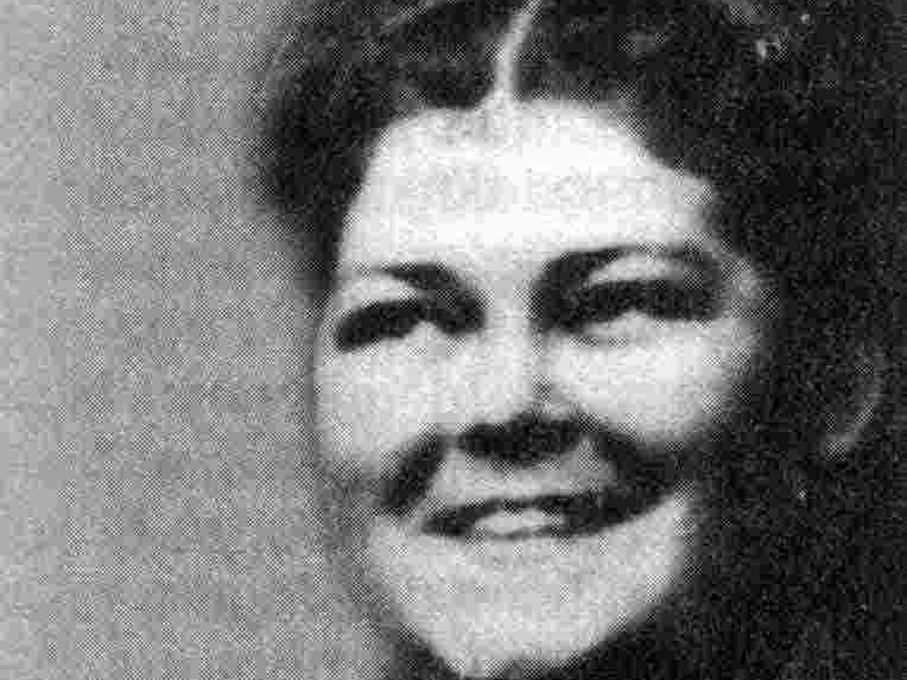

Родилась 1 октября 1924 года в Закамске. Когда началась война, восемнадцатилетней девушкой пошла на курсы медсестёр. С 1943 по 1945 год в качестве старшины медицинской службы служила в полевом хирургическом госпитале, прошла с 38-й армией до Праги. После Победы шестнадцать лет проработала медсестрой в Перми, а затем сменила профессию и стала журналисткой заводской газеты и радио. Свои фронтовые воспоминания она превратила в книгу «Солдаты милосердия: Записки фронтовой медсестры» (1987), ставшую одним из немногих личных свидетельств пермских медсестёр о войне.